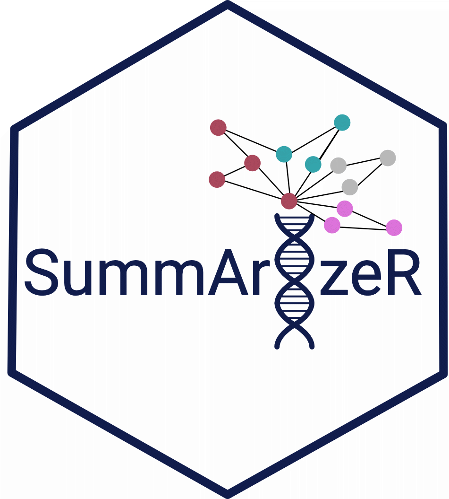

SummArIzeR

SummArIzeR is an R package, that allows an easy use of EnrichR to compare enrichment results from multiple databases of multiple conditons. It results in a clustering of enriched terms and enables the annotation of these terms by creating a promt for large language models such as gpt4. Results can be vizualised in a Heatmap.
Features
- Perform enrichment analysis using
enrichR. - Allows analysis of multiple conditions
- Analyze up- and down-regulated genes separately.
- Filter terms by p-value and gene thresholds.
- Calculates similarities of results terms based on included genes
- Clusters terms using random walk algorithm
- Generates a prompt for a LLM to summarized cluster annotations
- Allows easy visualization
Workflow

Steps to perform an enrichment analysis with SummArIzeR:
- Enrichment analysis
- Treshold selection for Term clustering
- Term annotation using LLMs
- Vizualisation
Citation
If you are using SummArIzeR for your publication, please cite us:
SummArIzeR: Simplifying cross-database enrichment result clustering and annotation via large language models Marie Brinkmann, Michael Bonelli, Anela Tosevska bioRxiv 2025.05.28.656331; doi: https://doi.org/10.1101/2025.05.28.656331
Bug Reports
If you encounter any errors or issues, or if you have a suggestion please file an issue here.